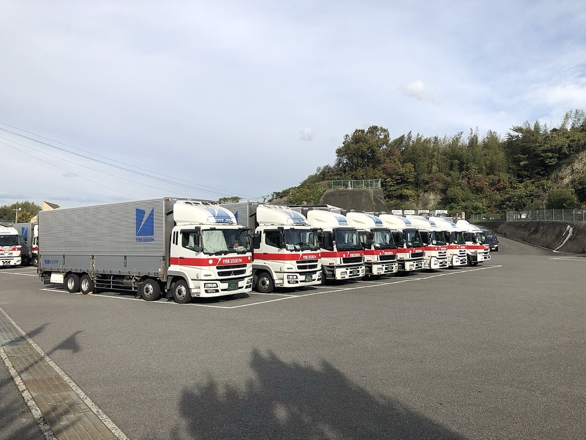
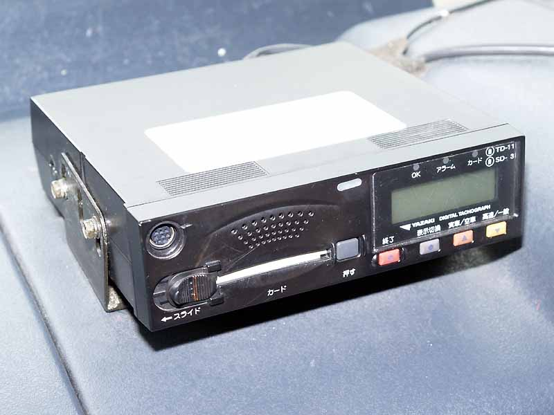

後継者がいない地方のトラック運送会社を、融資を使って1社ずつ買収する。買収した会社の車両と配車を1つの配車システムに統合し、帰り荷の確保と積載率の向上で利益率を上げる。荷主には、改正物流効率化法とトラック適正化二法への対応を含めた輸送を販売する。
道路貨物運送業の売上高は2023年に28.9兆円である。経済構造実態調査の企業ベースの集計による1。トラック運送事業者は2024年3月末に63,127者、車両は1,495,448両で、車両10両以下の事業者が54.8%を占める2。

本案の対象は、宅配と特別積合せを除く地方の一般貨物である。この部分の市場規模を示す統計は確認できなかった。
推計 対象市場 ＝ 28.9兆円 × 一般貨物の比率 × 三大都市圏以外の比率
一般貨物の比率を50%、三大都市圏以外を50%と仮定すると、28.9兆円 × 0.5 × 0.5 ≒ 7.2兆円となる。2つの比率は本ページの仮定値である。
トラック運送は各国の許可制度の下で営まれる国内産業である。本ページでは海外の市場規模を一次情報で確認できなかった。米国では2026年にフレイトブローカーの買収にプライベートエクイティの資金が入っており11、中小運送会社の統合は日本に固有の動きではない。
| 年 | 変化 | 数値 |
|---|---|---|
| 2024年4月 | ドライバーの時間外労働に年960時間の上限が適用された | 対策がなければ輸送能力は2024年度に14.2%、2030年度に34.1%不足する7 |
| 2024年度 | 道路貨物運送業の倒産 | 353件、4年連続の増加4 |
| 2024年度 | 営業用トラックの積載率 | 41.3%、前年度比1.4ポイント上昇8 |
| 2025年 | 道路貨物運送業の倒産 | 308件、前年比17.6%減3 |
| 2025年6月 | トラック適正化二法が成立した | 事業許可の5年更新制と適正原価を下回る運賃の制限を導入する5 |
| 2026年1〜4月 | 道路貨物運送業の倒産 | 108件に増加。従業員5人未満が49.0%3 |
| 2026年4月 | 改正物流効率化法の規制措置と、トラック適正化二法の一部が施行された | 取扱貨物9万トン以上の特定荷主にCLOの選任を義務付けた。保有150台以上の運送会社は特定事業者となる6。委託次数の制限も施行された12 |
| 2028年6月まで | 許可更新制と適正原価の施行 | 更新申請の開始はさらに約2年後になる見込み12 |
2025年は燃料費の価格転嫁が進み倒産が減った3。それでも2026年1〜4月は人手不足倒産が前年同期比21.0%増の23件である3。許可更新制が施行されると、法令を守れない小規模事業者は許可を更新できない。単独で残れない会社の譲渡先が必要になる時期は、2026年から2030年に集中する。
| 種類 | 事業者 | 動き |
|---|---|---|
| 大手物流の買収 | センコーグループHD | 2025年3月期の売上高8,545億円。中期計画で売上高1兆円を掲げ、物流事業のM&Aに279億円を実行した10 |
| 大手物流の買収 | 日本通運、ヤマト、佐川など | 主に海外と特定領域の買収。地方の小規模会社の買収は主たる手段ではない |
| 投資ファンド | 国内の中小向けファンド | 東北の運送会社をポートフォリオ拡充の目的で取得した事例がある9 |
| サーチファンド | 個人サーチャー | 運送会社に限った成約事例は確認できなかった |
譲渡価格の目安は、時価純資産に営業利益の2〜5年分を加えた額である9。仲介サイトの掲載例では、東海の売上高約7億円・実態EBITDA約1億円・車両約100台の会社が希望価格5.6億円である。EBITDAの約5.6倍に当たる13。
首位の条件 国内のトラック運送市場28.9兆円で売上高1位になるには、兆円単位の売上が必要で、10年では届かない。首位を狙えるのは地域を限った市場である。たとえば1つの地方ブロックの一般貨物で売上高1位になる条件は3つである。①同じ地域の会社を集中して買収し、帰り荷と車両を共有できる密度を確保すること。②買収後1年以内に配車を統合し、積載率と実車率を上げること。③特定荷主のCLOに対し、輸送と法令対応を一括で提供できる規模に達すること。
サーチファンド型で始める。創業者が自ら買収対象を検索し、買収後は社長として経営する。投資家の資金は入れず、自己資金と融資で1社目を買収する。
| 用途 | 金額 | 検証すること |
|---|---|---|
| 検索期間の生活費と活動費 6か月 | 500万円 | 地銀と税理士からの紹介で、条件に合う案件を何件得られるか |
| 財務・労務・法務の調査、仲介手数料 | 900万円 | 未払残業代と車両の整備状態 |
| 1社目の株式取得の自己資金 | 2,300万円 | EBITDA4,000〜5,000万円の会社を約2.2億円で取得できるか |
| 配車システムの導入 | 300万円 | 積載率と実車率の改善幅 |
| 合計 | 4,000万円 |
| 月 | 計画 |
|---|---|
| 1〜3月目 | 対象地域を1つの地方ブロックに絞る。売上高3〜5億円・車両30〜60台・後継者不在・荷主が3社以上に分散、の条件を満たす会社を30社集める |
| 4〜6月目 | 3社と面談し1社と基本合意する。調査で未払残業代、運行管理、車両の残存価値を確認する |
| 7月目 | 株式を取得する。資金は自己資金2,300万円、日本政策金融公庫の事業承継向け融資7,200万円14、地銀の融資約1億円、売主への分割払い約2,500万円とする |
| 8〜12月目 | 旧経営者を顧問として残し、荷主とドライバーの離反を防ぐ。配車を統合し、帰り荷を荷主営業で確保する。2社目の候補を同じ地域で3社まで絞る |
1年目の判定基準は、ドライバーの離職がなく、営業利益率が買収前から1ポイント以上上がることである。
| 段階 | 資金 | 金融機関 | 条件 |
|---|---|---|---|
| 1社目 1年目 | 事業承継融資、買収融資、売主の分割払い | 日本政策金融公庫 国民生活事業、地銀 | 公庫の限度は別枠7,200万円14。地銀は対象会社の営業キャッシュフローと車両、土地を担保にする |
| 2〜5社目 2〜4年目 | 持株会社による買収融資、資本性劣後ローン | 地銀、商工中金、日本政策金融公庫 中小企業事業 | 資本性ローンの限度は15億円、期限一括返済で最長20年15 |
| 車両更新 毎年 | 車両リース、割賦 | リース会社、メーカー系金融 | 車両はリースで調達し、買収資金と分ける |
| 6社目以降 5年目以降 | シンジケートローン | メガバンク、地銀の協調融資 | 連結EBITDAの3〜4倍を上限に借りる |
| 年目 | 1 | 2 | 3 | 5 | 7 | 10 |
|---|---|---|---|---|---|---|
| グループ会社数 | 1 | 3 | 6 | 18 | 40 | 90 |
| 売上高 億円 | 4 | 12 | 30 | 120 | 350 | 1,000 |
| 営業利益 億円 | 0.12 | 0.5 | 1.5 | 7 | 21 | 60 |
| 累計投資 億円 | 2.2 | 7 | 18 | 70 | 200 | 560 |
| 借入残高 億円 | 2.0 | 6 | 15 | 55 | 150 | 380 |
| 年目 | 1 | 2 | 3 | 5 | 7 | 10 |
|---|---|---|---|---|---|---|
| グループ会社数 | 1 | 2 | 3 | 7 | 13 | 25 |
| 売上高 億円 | 4 | 6 | 10 | 30 | 60 | 120 |
| 営業利益 億円 | 0.08 | 0.15 | 0.3 | 1.0 | 2.4 | 5 |
| 累計投資 億円 | 2.2 | 3.5 | 6 | 18 | 36 | 72 |
| 借入残高 億円 | 2.0 | 3 | 5 | 14 | 26 | 48 |
前提
楽観の10年目は売上高1,000億円で目安に届く。ただし10年で90社の買収と統合を要し、年平均9社である。保守では25社、売上高120億円に留まる。
楽観の売上高1,000億円は、国内の道路貨物運送業28.9兆円の約0.35%である。国内のトラック運送全体でシェア1位には10年で届かない。
首位を取りうるのは地方ブロック単位の一般貨物である。第2章の推計7.2兆円を8ブロックで割ると1ブロック約9,000億円で、1,000億円以上の条件を満たす。そのブロックで1位になるには、域内の大手物流の拠点売上を上回る必要がある。大手の地域別売上は公表されておらず、1,000億円で1位になるかは確認できない。
停止する位置は3つある。1つ目は1社目の統合でドライバーが離職し、地銀の追加融資が得られない場合である。2つ目は5年目前後で、買収の担当者と統合の担当者を自社で育成できない場合である。会社数が増えても配車が統合されず、利益率が上がらない。3つ目は許可更新制の施行後で、大手と投資ファンドが買い手として増え、取得価格が上がる場合である。
運送会社そのものの海外展開は想定しない。各国に許可制度があり、日本で統合した車両は海外で使えない。展開しうるのは配車統合の手法と配車システムである。
| 順 | 国 | 理由 |
|---|---|---|
| 1 | タイ、ベトナム | 日系荷主の工場が多く、日本の荷主に随伴できる |
| 2 | 台湾、韓国 | 高齢化と運転者不足が日本と同じ方向に進んでいる |
グローバルなインフラになる見込みは低い。
| # | 基準 | 判定 | 根拠 |
|---|---|---|---|
| 1 | 50年、魂を燃やし続けられるか | 創業者が判定 | |
| 2 | 10年以内に、国内市場規模1,000億円以上の市場でシェア1位になれるか | △ | 四国の一般貨物は推計約7,739億円で、楽観の買収を四国に集中すれば7年目に売上300億円に届く。ただし大手の四国内の売上が非公表で、首位の基準は仮定に留まる |
| 3 | 4,000万円で始められ、融資で伸ばせるか | ◎ | 公庫の承継融資7,200万円と地銀融資で約2.2億円の1社目を取得でき、以後は連結EBITDAを返済原資にできる |
| 4 | グローバルなインフラになり得るか | × | 運送は各国の許可制度の下にある国内産業で、輸出できるのは配車の手法に限られる |
| 5 | 営業力が最初の売上に直結するか | ○ | 帰り荷の確保と特定荷主のCLOへの提案が、買収直後の売上増になる |
| 6 | 同じビジョンを共有する仲間を誘える事業か | 創業者が判定 | |
| 7 | 本業が早く現金を生み、返済と出資の原資になるか | ○ | 買収した時点で営業キャッシュフローがある。ただし利益率は3%前後で、大半は返済に充てられる |
| 8 | 投資先を束ねる群の中核になれるか | ○ | 整備・倉庫・採用・ソフトウェアの各事業がグループの車両と荷主を共通の需要にできる |
| 9 | 成長の資金源がA・B・Cのどれに当たるか | C | 買収対象のキャッシュフローを返済原資にした借入で買収する |
1. 買収後のドライバー離職 運送会社の価値はドライバーと荷主との関係にある。旧経営者が退くと離職が起きやすい。対策は旧経営者を1〜2年顧問として残し、賃金体系を変える前に説明の期間を設けることである。
2. 簿外債務 未払残業代と事故の賠償は財務諸表に現れない。対策は労務調査に費用を割き、表明保証と売主への分割払いで支払いの一部を後にすることである。分割払いで補えない額の債務が後から判明した場合は潰せない。
3. 取得価格の上昇 センコーなどの大手と投資ファンドも同じ会社を買う9 10。許可更新制が施行されると売り手は増えるが、買い手も増える。対策は1つの地域に集中し、旧経営者の地元での評判を買収の条件にすることである。価格競争そのものは潰せない。
4. 統合の失敗 会社ごとに配車の方法と荷主の契約が異なる。統合しなければ買収は会社の寄せ集めで終わる。対策は買収前に配車システムの導入計画を作成し、統合が終わるまで次の買収をしないことである。

5. 金利の上昇 借入残高は楽観の10年目で380億円である。金利が1ポイント上がると利払いは年3.8億円増える。固定金利の比率を上げれば一部は抑えられるが、借換時の金利は潰せない。
運輸局の管轄区域を地方ブロックとし、一般貨物の車両数から市場規模を推計した。1両当たりの年間営業収益は約1,646万円とする。全日本トラック協会の経営分析による2022年度の一日一車当たり営業収益45,090円に、365日を乗じた値である17。この集計は特別積合せと霊柩を除く一般貨物運送事業者を対象とする。
| ブロック | 基準日 | 一般貨物の車両数 | 推計市場 | 出典 |
|---|---|---|---|---|
| 四国 | 2025年3月末 | 47,024両 | 約7,739億円 | 16 |
| 北陸信越 | 2018年3月末 | 65,119両 | 約1.07兆円 | 19 |
| 九州 | 2025年3月末 | 154,880両 | 約2.55兆円 | 18 |
推計市場 = 車両数 × 1,646万円。四国と北陸信越は特別積合せの運行車を除いた。九州は特別積合せを含む。北陸信越はこれより新しい値を確認できなかった。
四国を選ぶ。理由は3つある。1つ目は、推計市場が約7,739億円で1,000億円以上の条件を満たし、確認した3ブロックの中で最も小さいことである。首位に必要な売上もそれだけ小さい。2つ目は、管外に本社をもつ事業者の車両が20.3%に留まることである16。北陸信越の2018年の22.2%19と同じ水準で、残りの約8割を四国に本社をもつ事業者が保有する。3つ目は、四国に本社をもつ事業者の1者当たりの車両が約17.9両と小さく、買収の対象が多いことである16。
四国4県に配置された一般貨物の車両による輸送とし、特別積合せと霊柩を除く。2025年3月末の数値は次のとおりである。
| 区分 | 事業者数 | 車両数 | 出典 |
|---|---|---|---|
| 四国に本社をもつ事業者 | 2,088者 | 37,474両 | 16 |
| 管外に本社をもつ事業者 | 198者 | 9,550両 | 16 |
| 計 | 2,286者 | 47,024両 | 16 |
特別積合せの事業者と運行車を除いた値で、本ページで算出した。
本社所在地別の車両数は愛媛15,578両・香川10,166両・徳島6,479両・高知5,522両である。愛媛と香川で約7割を占める16。四国運輸局管内の一般貨物の輸送トン数は、2024年度に7,797万トンで前年度比5.3%減である16。
推計 四国の一般貨物の市場 ＝ 車両数 × 一日一車当たり営業収益 × 365日 ＝ 47,024両 × 45,090円 × 365日 ≒ 7,739億円
営業収益は全国の集計値であり、四国の値は確認できなかった。四国の運賃水準が全国より1割低い場合は約6,965億円になる。いずれも1,000億円以上の条件を満たす。
四国に本社をもつ一般貨物の事業者で売上を確認できたのは、愛媛県東温市の丸協運輸である。年商は138億6,000万円、従業員は1,301名である20。拠点は四国4県と広島・岡山・鳥取・山口にあり、倉庫業も含む。このため四国の一般貨物の売上はこれより小さく、推計市場に対する比率は1.8%以下である。
管外に本社をもつ198者は、合計9,550両を四国に配置している16。1者当たりの平均は約48両である。この中には全国の大手物流会社が含まれるが、各社の四国内の車両数と売上は公表されていない。
首位に必要な規模を、推計市場の4%にあたる売上約300億円、車両約1,820両と置く。丸協運輸の年商の2倍強である。大手1社が四国に配置する車両がこれを超える可能性は低いと考えるが、大手の四国内の車両数は確認できないため、4%は本ページの仮定である。
第5章の条件である車両30〜60両の会社を1社40両として買収すると、約45社が必要になる。四国に本社をもつ2,088者の約2%にあたる。
| 計画 | 四国の売上 | 基準300億円に届く年 | 基準770億円に届く年 |
|---|---|---|---|
| 楽観の買収をすべて四国に集中 | 5年目120億円、7年目350億円、10年目1,000億円 | 7年目 | 10年目 |
| 保守の買収をすべて四国に集中 | 7年目60億円、10年目120億円 | 届かない | 届かない |
楽観の7年目は会社数40社・売上350億円で、45社・300億円の基準を売上で50億円上回る。基準を推計市場の10%、約770億円と置くと、楽観でも届くのは10年目である。10年目の1,000億円を四国だけで計上すると、四国の一般貨物の車両の約13%を保有することになる。保守の10年目120億円は、丸協運輸の年商を下回る。
1両当たり1,646万円とすると、約6,080両で1,000億円に達する。愛媛県に本社をもつ事業者の15,578両だけでも約2,560億円に相当する16。
四国の一般貨物に限れば、首位に届く可能性がある。届くとすれば7年目である。条件は、楽観計画の買収をすべて四国に集中し、首位の基準が推計市場の4%・売上約300億円であることである。必要な規模は買収約45社、車両約1,820両である。基準が10%なら10年目までかかり、保守の計画では届かない。大手物流会社の四国内の売上が公表されていないため、4%の基準は仮定のままである。